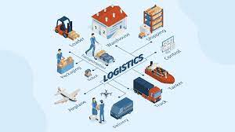
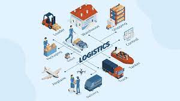
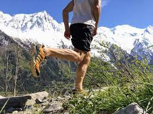

Tracking
From Wikipedia,the free encyclopeia
Tracking may refer to:
In science and technology [edit]
In computing [edit]
- Tracking in computer graphics, in match moving ( insertion of graphics into footage
)
- Tracking, composing music with music tracker software
- Eye tracking , measuring the position of the eye relative to the head
- Finger tracking, measuring the positions of the fingers
- Optical motion tracking, or motion capture, recording the precise movements of objects or people
- Position tracking (incremental encoder), monitoring the location of a mechanical system in real-time by counting pulses
- Positional tracking,g an essential component of augmented reality
- Video tracking, locating an object in each frame of a video sequence
- Mobile phone tracking, monitoring the physical location of a mobile phone
- Web visitor tracking, the analysis of visitor behavior on a website
- Sleep tracking, monitoring sleeping experience (deep, REM, duration etc.)
In life sciences [edit]
 

- Package tracking, or package logging, the process of localizing shipping containers, mail and parcel post at different points of time during sorting, warehousing, and package delivery to verify their provenance and to predict and aid delivery.
- Track and trace, a process of determining the current and past locations and other status of property in transit
- Asset tracking, which provides status of objects of an inventory or mobile stock
- Tracking (commercial airline flight), the means of tracking civil airline flights in real time
Other uses in science and technology[edit]
- Tracking (particle physics), measuring the direction and magnitude of the momenta of charged particles
- Tracking, a process of degradation in which tree-like carbonized patterns(electrical treeing) appear on an insulator
- Tracking or Toe (automotive), the symmetric angle that each wheel makes with the long axis of a vehicle
- Video tape tracking, alignment of the magnetic tape of a video recorder with the read head
- Tracking, combining individual radar detections with a radar tracker
- Tracking system, various methods used to monitor moving persons or objects, often remotely
- Tracking transmitter, a device that broadcasts a radio signal that can be detected by a directional antenna
- Target and missile tracking, elements ofGo-Onto-Target systems in missile guidance
- Tracking is also used, euphemistically, for surveillance or mass surveillance
- Multitrack recording, a term commonly shortened to "tracking"
In arts and entertainment[edit]

- Tracking shot, Tracking (dog), the act of a dog following a scent trail
- Tracking shot, Tracking (freeflying), in skydiving, the technique of moving horizontally while in freefall
- Tracking shot, Tracking (hunting), the art of learning about a place via animal trails and other environmental evidence
- Tracking shot, Tracking trial, a dog competition
- Tracking (education), separating children into classes according to academic ability
- Tracking (scouting), a scouting activity focused on observation, stalking, and following a trail
- Tracking, typographers' term for letter-spacing, uniformly increasing or decreasing the space between all letters in a block of text
- Tracking, matching or comparing the performance of a financial portfolio to a stock market index